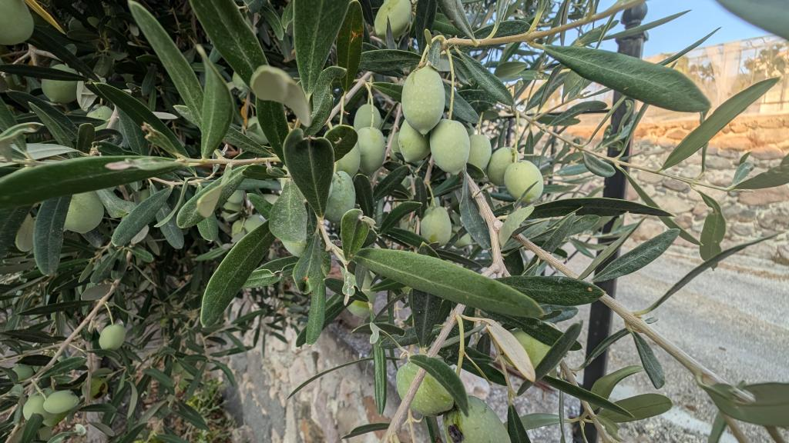
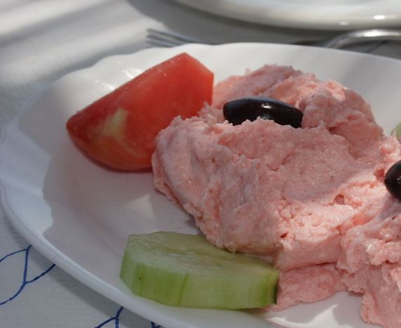
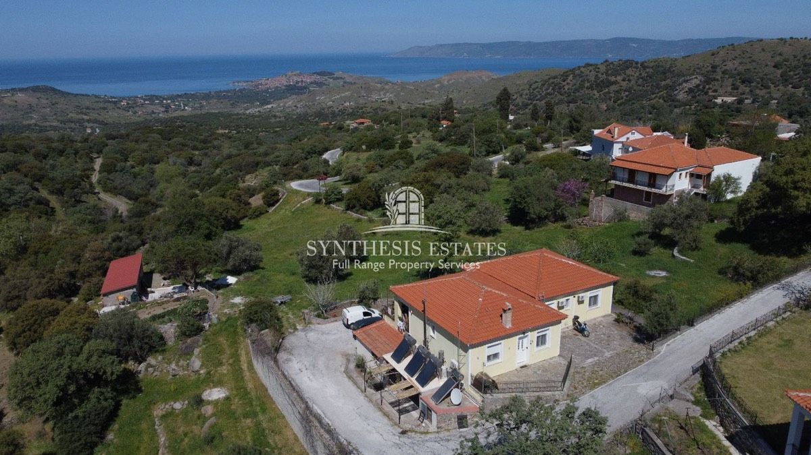
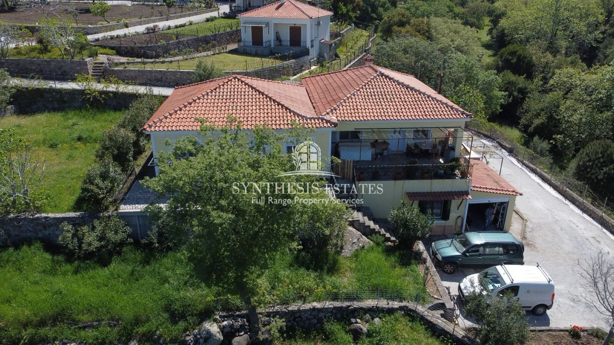
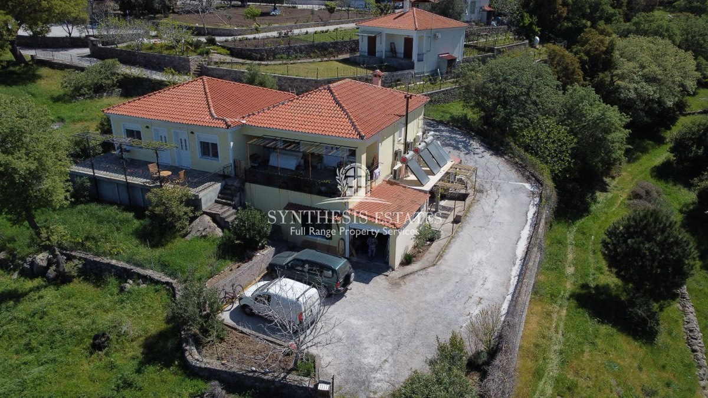
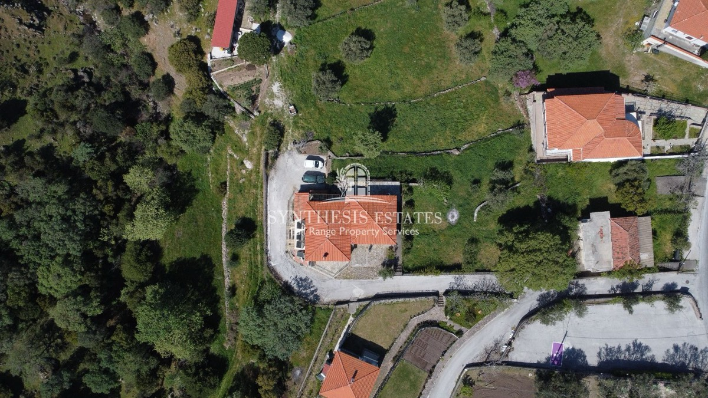
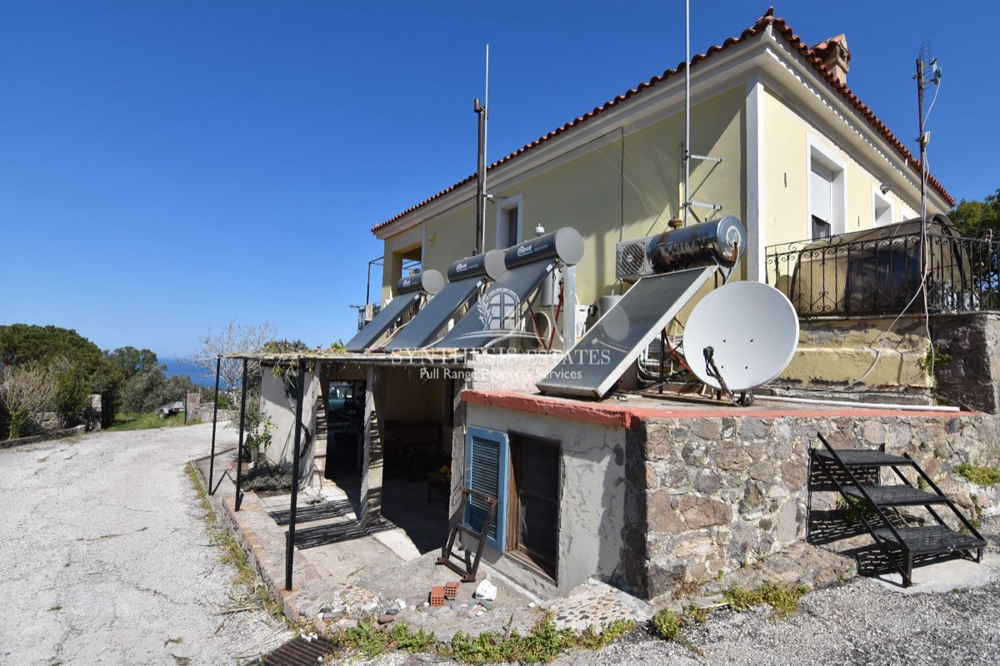

Hey, ich bin Ignatios. Mein Vater kommt aus Vafios und lebt seit Jahrzehnten in Deutschland — bloggt aber immer noch über griechische Rezepte und die Insel. Die Verbindung dorthin war nie weg. Jetzt renoviere ich unsere Familienanlage Stück für Stück.
Vafios (griech. βαφή — Färbung) ist ein Bergdorf mit rund 150 Einwohnern oberhalb von Molyvos. Eingebettet in Olivenhaine, mit Blick bis zum Meer. Bis zu den schönsten Stränden und zum touristischen Zentrum Molyvos sind es 10 Minuten mit Auto oder Roller.
Drei Apartments mit Küche und großer gemeinsamer Veranda. Ich vermiete am liebsten an Freunde, Bekannte und Leute aus dem erweiterten Kreis — ob für eine Woche, einen Monat oder länger. Besonders willkommen: Menschen die mitanpacken oder sich am Projekt beteiligen wollen.
Anfragen →


Rezepte aus der Familie — einfach, ehrlich, griechisch.

Aufgeschlagene Oliven — wie die Griechen sie machen.

Fischrogen-Creme mit Kartoffeln — cremig und schnell gemacht.
Drei Saucen zum Grillen — scharf, rauchig, frisch.
Drei Apartments mit Küche, Bad und großer gemeinsamer Veranda — auf einem Grundstück mit Panoramablick bis Molyvos und zum Meer.



Jeweils ~40 m² · Offener Wohn-/Essbereich mit Küche, Schlafzimmer, Bad.
~65 m² · Wohnzimmer, Esszimmer, Küche, Schlafzimmer, Bad.
Studio, Abstellraum und Waschmaschine.


Zielflughafen ist Mytilene (MJT) auf Lesbos. Direktflüge gibt es ab Wien (ab Juni), Amsterdam und Brüssel. Aus Deutschland am besten über Athen (Aegean, Ryanair, Wizz Air) oder über Izmir + Fähre.
Ich antworte so schnell wie möglich — meistens innerhalb weniger Stunden.
Du bist handwerklich begabt? Wer mit anpackt, kann mietfrei wohnen.
Oleander Updates abonnieren →